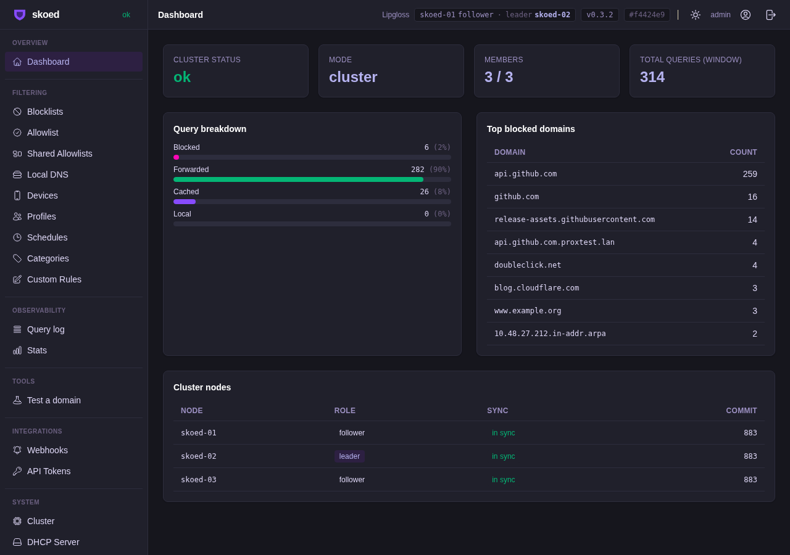
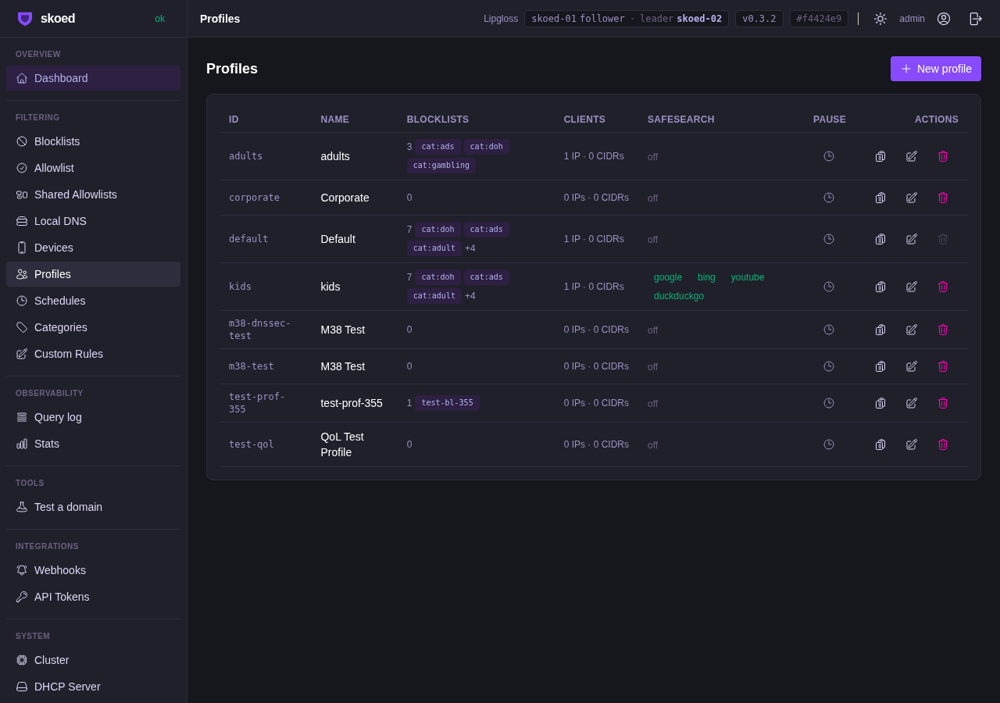

Each profile can inherit, validate, or transparently pass DNSSEC — with cache isolation per mode
Acceptance Tests
| Test | FSID | Description | Status | Duration |
|---|---|---|---|---|
| TestDnssecModeConfigurable | FS-DnssecModeConfigurable | Global DNSSEC mode roundtrips via PATCH /settings | PASS | 2.1s |
| TestDnssecValidateBogusReturnsServfail | FS-DnssecValidateBogusServfail | validate mode + bogus AD=0+RRSIG → SERVFAIL | PASS | 2.3s |
| TestDnssecValidateOkPassthrough | FS-DnssecValidateOkPassthrough | validate + AD=1 → NOERROR + dnssec_status=ok | PASS | 2.2s |
| TestDnssecValidateInsecurePassthrough | FS-DnssecValidateInsecurePassthrough | validate + no RRSIG → NOERROR + status=insecure | PASS | 2.2s |
| TestPerProfileDnssecInherit | FS-PerProfileDnssecInherit | Profile inherit → uses global transparent → bogus passes | PASS | 1.93s |
| TestPerProfileDnssecValidate | FS-PerProfileDnssecValidate | Profile validate overrides global transparent → SERVFAIL | PASS | 1.92s |
| TestPerProfileDnssecTransparent | FS-PerProfileDnssecTransparent | Profile transparent overrides global validate → NOERROR | PASS | 2.42s |
Proxmox 3-Node Cluster Validation
Screenshots — Proxmox Cluster (skoed-01)

